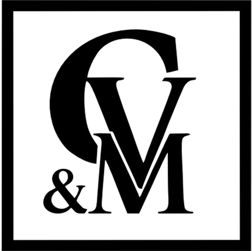

Rescisão indireta
Quando a empresa comete falta grave, como não depositar o FGTS, a lei permite encerrar o contrato com efeitos semelhantes aos de uma dispensa sem justa causa.

Análise individual da sua situação trabalhista para quem trabalha em Três Corações e no Sul de Minas. Rescisão indireta, insalubridade e periculosidade, com orientação clara sobre o próximo passo.
Falar com Advogado EspecialistaEstas são as irregularidades que mais levam trabalhadores a procurar orientação.
Quando a empresa comete falta grave, como não depositar o FGTS, a lei permite encerrar o contrato com efeitos semelhantes aos de uma dispensa sem justa causa.
Meses faltando no extrato ou saldo que não aparece. O depósito é obrigação da empresa, todo mês, e a falta pode ser cobrada.
Na carteira, um cargo. No dia a dia, as tarefas e a responsabilidade de outro, sem o reconhecimento correspondente.
Exposição a ruído, calor, produtos químicos ou agentes biológicos acima dos limites, sem o adicional no holerite.
Trabalho com eletricidade, inflamáveis, explosivos ou segurança patrimonial sem receber os 30% previstos em lei.
Se você se identificou, não tome nenhuma decisão antes de uma análise.
Quem pede demissão, em regra, abre mão de direitos importantes. Quando a falta é da empresa, a rescisão indireta pode ser o caminho, e só a análise do seu caso responde isso.
Cada direito depende da análise do caso concreto e, quando necessário, da decisão da Justiça do Trabalho.
Você conta o que acontece no trabalho e tira as dúvidas iniciais direto com o escritório.
Possibilidade de rescisão indireta e direito aos adicionais de insalubridade ou periculosidade.
Orientação sobre o que fazer agora e quais documentos reunir para a análise do caso.
Adicional não pago e FGTS atrasado podem ser cobrados. Mas existe prazo para isso.
De 10%, 20% ou 40%, conforme o grau de exposição a ruído, calor, produtos químicos ou agentes biológicos.
Sobre o salário-base, para quem trabalha com eletricidade, inflamáveis, explosivos ou segurança patrimonial.
O prazo conta do fim do contrato, e só os últimos 5 anos podem ser cobrados. Cada mês parado é um mês a menos.
Contato direto com o escritório, sem formulário e sem intermediários.
Conta o que acontece no trabalho e tira as dúvidas iniciais com quem entende de Direito do Trabalho.
Sai sabendo os próximos passos e a documentação necessária para a análise do caso.
Atuação em rescisão indireta, insalubridade e periculosidade.
Atendimento a trabalhadores de todo o Sul de Minas Gerais.
Você fala com o escritório, em linguagem simples, sem juridiquês.
A conversa é confidencial. A empresa não é avisada de que você buscou orientação.
O que quase todo trabalhador pergunta antes de buscar os próprios direitos.
Depende de como você sai. Pedir demissão e ter a rescisão indireta reconhecida têm efeitos bem diferentes: na rescisão indireta, os efeitos são semelhantes aos de uma dispensa sem justa causa. Por isso, não tome essa decisão sem antes entender o seu caso.
Não. A conversa é protegida por sigilo profissional. A empresa só toma conhecimento se houver uma medida judicial ou extrajudicial, e isso só acontece com a sua autorização.
É exatamente isso que a análise responde. O escritório avalia as irregularidades, os documentos e as provas disponíveis, como FGTS não depositado ou desvio de função, antes de indicar qualquer caminho.
Depende do ambiente e das condições do seu trabalho. Conte o que você faz no dia a dia e a que está exposto. Em regra, o direito é confirmado por perícia técnica, e o advogado orienta sobre a possibilidade e os próximos passos.
Sim, e é o melhor momento. A orientação prévia mostra como agir enquanto o contrato está ativo, evitando atitudes que possam prejudicar seus direitos.
Pelo aplicativo do FGTS ou pelo extrato da Caixa. Se faltam meses ou o saldo não aparece, guarde o extrato: ele é um dos documentos mais importantes para a análise.
Buscar direitos é uma garantia de todo trabalhador. Se houver retaliação, como perseguição ou tratamento diferente, essa conduta também pode ser levada à Justiça. O advogado orienta como agir para se proteger.
Sim. O escritório atende trabalhadores de Três Corações e das cidades do Sul de Minas Gerais, e o primeiro contato é feito direto pelo WhatsApp.
O prazo é de até 2 anos após o fim do contrato, e podem ser cobrados os direitos dos últimos 5 anos. Por isso, quanto antes o caso for analisado, melhor.
Fale agora com um advogado trabalhista em Três Corações e entenda o que a lei garante para a sua situação, antes de qualquer decisão.